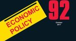

I am an Economist. My current professional appointments are:
Full professor
Economics and Finance dept.
Luiss University - Rome
Luiss University - Rome
Associate faculty
Toulouse School of Economics
Associate Editor
Journal of Industrial Economics
Research Fellow
Centre for Economic Policy Research (CEPR)
Research Affiliate
Einaudi Institute for Economics and Finance
Research Fellow
CSEF - U. Naples Federico II
Research Fellow
Centro studi Luca D'agliano
Emilio Calvano
Ph.D. in Economics, Toulouse School of Economics
Employment and current affiliations
 Full Professor (professore ordinario — 13/A2 Politica Economica), LUISS Guido Carli, Rome — Department of Economics and Finance. Since 2023.
Full Professor (professore ordinario — 13/A2 Politica Economica), LUISS Guido Carli, Rome — Department of Economics and Finance. Since 2023. Research Fellow, Einaudi Institute for Economics and Finance, Rome. 2021–ongoing.
Research Fellow, Einaudi Institute for Economics and Finance, Rome. 2021–ongoing. Associate Faculty member, Toulouse School of Economics, France. 2018–ongoing.
Associate Faculty member, Toulouse School of Economics, France. 2018–ongoing.- Research Fellow, CSEF, U. Napoli Federico II. 2013–ongoing.
- Fellow, Centro Studi Luca D'Agliano, Università di Milano. 2019–ongoing.
Service to the profession
 Associate Editor, Journal of Industrial Economics.
Associate Editor, Journal of Industrial Economics.- Co-editor, International Journal of Industrial Organization.

Guest editor, Economic Policy.- Member of the AI Advisory Board, DG-CNECT, European Commission. 2026–ongoing.
 European Research Council — Panel Member, Advanced Grants 2024.
European Research Council — Panel Member, Advanced Grants 2024.
Previous employment
- Full Professor, Università di Roma Tor Vergata, Dept. of Economics and Finance, 2021–2023.
- Associate Professor, Università di Bologna, Department of Economics, 2019–2021.
- Assistant Professor (RTDb), Università di Bologna, Department of Economics, 2016–2019.
- Post-doc (assegnista), Università di Napoli Federico II, CSEF, 2013–2016.
- Research Fellow and lecturer (docente a contratto e assegnista di ricerca), Università Bocconi, Department of Economics, 2009–2013.
- Post-Doctoral Research Fellow, Harvard University, Economics Department, US, 2008–2009.
Ongoing research projects
- European Research Council — Advanced Grant — Principal Investigator. “Artificial Intelligence and Competition.” Budget €1.9M. 11/2023, 5 years.
- PRIN 2022 — “Algorithms and economic choices” — head of the local unit, LUISS.
Academic qualifications
- Ph.D. in Economics, Université Toulouse 1 Capitole, November 2008. Supervisor: Prof. Bruno Jullien. Dissertation: “Essays in Applied Economic Theory.” Committee: Jean Tirole, Jacques Crémer, Jörgen Weibull, Fausto Panunzi. Grade: Très honorable avec félicitations du jury.
- Diplôme européen d'économie quantitative approfondie, Université Toulouse 1 Capitole, July 2005. With distinction.
- Master 2 — Économie mathématique et économétrie, Université Toulouse 1 Capitole, July 2004. With distinction.
- Laurea in Economia Politica (vecchio ordinamento), Università Bocconi, April 2003. Summa cum laude. Supervisor: Fausto Panunzi.
Scientific publications
Self-Play Q-Learners Can Provably Collude in the Iterated Prisoner's Dilemma. with Q. Bertrand, J. Duque and G. Gidel. ICML Conference Proceedings, 2025. link
Artificial intelligence recommendations: evidence, issues, and policy. with G. Calzolari, V. Denicolò and S. Pastorello. Oxford Review of Economic Policy, 2024. link
Economics of Recommender Systems. with G. Calzolari, V. Denicolò and S. Pastorello. Proceedings of the 18th ACM Conference on Recommender Systems (RecSys), 2024. link
Algorithmic collusion, genuine and spurious. with G. Calzolari, V. Denicolò and S. Pastorello. International Journal of Industrial Organization, 2023. link
What drives segregation? Evidence from social interactions among students. with G. Immordino and A. Scognamiglio. Economics of Education Review, October 2022. link
Algorithmic collusion with imperfect monitoring. with G. Calzolari, V. Denicolò and S. Pastorello. International Journal of Industrial Organization, December 2021. link
Autonomous algorithmic collusion: economic research and policy implications. with S. Assad, G. Calzolari, R. Clark, V. Denicolò, D. Ershov, J. Johnson, S. Pastorello, A. Rhodes, L. Xu and M. Wildenbeest. Oxford Review of Economic Policy, March 2021. link
Protecting consumers from collusive prices due to AI. with J. Harrington, G. Calzolari, V. Denicolò and S. Pastorello. Science, November 2020 — featured on the cover. link
Artificial Intelligence, Algorithmic Pricing and Collusion. with G. Calzolari, V. Denicolò and S. Pastorello. American Economic Review, Vol. 110(10), October 2020, pp. 3267–3297. link
Merger Policy in Digital Markets: An Ex-Post Assessment. with E. Argentesi, T. Duso, P. Buccirossi, A. Marrazzo and S. Nava. Journal of Competition Law & Economics, July 2020. link
Algorithmic Collusion: A Real Problem for Competition Policy? with G. Calzolari, V. Denicolò and S. Pastorello. Competition Policy International, 2020.
Market Power, Competition and Innovation in digital markets: a survey. with M. Polo. Information Economics and Policy, March 2021. link
Strategic differentiation by business models: Free-to-Air and Pay-TV. with M. Polo. Economic Journal, Vol. 130(625), pp. 50–64, January 2020. link
Incumbency advantage and its value. with J. Crémer and G. Biglaiser. Journal of Economics & Management Strategy, Vol. 28(1), pp. 41–48, 2019. link
Algorithmic Pricing: what implications for competition policy? with G. Calzolari, V. Denicolò and S. Pastorello. Review of Industrial Organization, Vol. 55(1), 2019. link
The Impact of Consumer Multi-Homing on Advertising Markets and Media Competition. with S. Athey and J. Gans. Management Science, 64(4), pp. 1574–1590, April 2018. link
Either or both competition: a “two-sided” theory of advertising with overlapping viewership. with A. Ambrus and M. Reisinger. American Economic Journal: Microeconomics, Vol. 8(3), August 2016. link
Pricing Payment Cards. with Özlem Bedre-Defolie. American Economic Journal: Microeconomics, 5(3), pp. 206–231, August 2013. link
Issues in online advertising and competition policy: a two-sided market perspective. with Bruno Jullien. Chapter 7, Recent Advances in the Analysis of Competition Policy and Regulation, pp. 179–197, Elgar, 2012. link
Working papers & work in progress
- Artificial Intelligence, Recommender Systems and Competition — with G. Calzolari, V. Denicolò and S. Pastorello. R&R, Review of Economic Studies, 2025. SSRN
- Experimental Evidence That Conversational Artificial Intelligence Can Steer Consumer Behavior Without Detection — with T. Werner, I. Soraperra, D. C. Parkes and I. Rahwan, 2024. arXiv
- The Algorithmic Advantage: How Reinforcement Learning Generates Rich Communication — with C. Possnig and J. Tolvanen, 2026. arXiv
- Algorithmic Content Selection and the Impact of User Disengagement — with N. Haghtalab, E. Vitercik and E. Zhao. arXiv
- Biased recommendations and endogenous product choice — with G. Calzolari, V. Denicolò, S. Pastorello. In preparation.
- Can we trust the algorithms that recommend products online? A theory of biased advice with no pecuniary incentives and lab evidence — with Bruno Jullien. In preparation.
- Learning about your peers' ability and the dynamics of social interactions — with G. Immordino and A. Scognamiglio. In preparation.
- Ex-post assessment of merger control decisions in digital markets — with E. Argentesi, T. Duso, P. Buccirossi, A. Marrazzo, S. Nava. Review commissioned by the UK CMA. link
- A Theory of Community Formation and Social Hierarchy — with Susan Athey (Stanford GSB) and Saumitra Jha (Stanford GSB). Stanford GSB Research Paper No. 16-41.
Research networks & grants management
- Principal Investigator, European Research Council Advanced Grant on Artificial Intelligence and Competition. Budget €1.9M. 2023–2028.
- Head of the Digital Economics Research Network (DERN), based at UCLouvain, Belgium. Scientific budget 2020–2022: €600,000. 2019–2022. dern-research.org
- Coordinator of the local unit, National PRIN project 2017. Unit budget €256,925. 2020–2022.
- Organizer of the CEPR Industrial Organization webinar series (VIOS), CEPR, London. 2020–ongoing.
- Member, CEPR Research Policy Networks on Artificial Intelligence and on Competition Policy.
- Research Fellow, Centre for Economic Policy Research (CEPR), London. 2019–ongoing.
- Fellow, IGIER — Università Bocconi, Milan. 2009–2013.
Prizes, awards & grants
- Researcher of the Year 2024 — LUISS Guido Carli.
- PRIN 2017 Grant (Linea B, responsabile unità locale). €256,925. 2020–2022.
- Unicredit Giovanna Crivelli Fellowship 2009 (€240,000 over 4 years).
- EIEF Research Grant — €10,000, 2017.
- MIUR Research Grant (finanziamento attività base di ricerca), 2017.
Visiting positions & fellowships
- Instructor, Barcelona Graduate School Summer Institute, 2021–2024.
- Visiting Scientist, Simons Institute, UC Berkeley, Jan–May 2022.
- Visiting Scholar, Haas School of Business, UC Berkeley, Sep 2021–June 2022.
- Visiting Faculty (enseignant invité), Université Paris II Panthéon-Assas, 2017–2019.
- Research Fellow, Harvard University, Economics Department, 2008–2009.
- Visiting Research Fellow, Microsoft Research New England, Summer 2008.
- Visiting Fellow, Harvard University (RA for Susan Athey), 2007–2008.
Keynotes, plenary addresses & panels
- Keynote — 24th ZEW Conference on the Economics of ICT, Mannheim, Summer 2026.
- Plenary panel, Cornerstone Research Competition Expert Forum, London, Dec 2025.
- Plenary panel on AI and competition, Association for Competition Economics, Rome, Nov 2025 — “Competition enforcement and AI.”
- Keynote — Computational and Experimental Economics, Barcelona School of Economics Summer Forum, June 2025.
- Keynote — 11th European Competition Network Workshop on Digital Investigation and AI, AGCM, Rome.
- Plenary panel, CRESSE 2025 — “Mergers vs partnerships and AI”; plenary panel, Italian Antitrust Association annual conference, June 2025.
- Tutorial on the Economics of Recommender Systems, 18th ACM RecSys, Bari, 2024.
- Expert panelist, BCCP Conference and Policy Forum 2024, Berlin.
- Festival dell'Economia di Torino, public lecture on AI and the economy, 2024.
- Keynote & panel on AI, CEPR Symposium, Paris, Dec 2023.
- Expert panelist, OECD Competition Committee Roundtable “Algorithmic Competition,” Paris, 2023.
- Plenary panel, “Frontiers of Research on Digital Markets,” EARIE 2022, Vienna, Aug 2022.
Expert work
- Commissioned research (via Analysis Group) for the Competition Bureau Canada on algorithmic pricing, 2025.
- Commissioned research (via LEAR) — ex-post assessment of merger control in digital markets, commissioned by the UK CMA, 2019.
Teaching
Graduate & PhD
- Economics of Artificial Intelligence — Rome Economics Doctorate (LUISS–Tor Vergata–EIEF), 2023, 2024 and 2025.
- Economics of Artificial Intelligence — Barcelona GSE Summer School, 2021–2023.
- Advanced Topics in Industrial Organization and Information Economics — PhD, Università di Bologna, 2017.
- Teoria dei Giochi (Game Theory) — LM Economia e Management, 2017–2020.
- Economia e Politica della Concorrenza — LM Economia e Management, 2017–2020.
- Industrial Organization, Theory and Applications — LM in Economics, Università di Bologna, 2019–2020.
- Microeconomics — LMEF, Università Federico II, Napoli, 2014–2016.
- Competition Policy — LM DES, Università Bocconi, 2013.
Undergraduate
- Microeconomics / Microeconomia / Organizzazione Industriale — Bocconi, Bologna, Tor Vergata, LUISS (2009–2025).
- Industrial Organization — Università di Trieste, 2010–2012.
Supervision
- Post-doc: Maximilian Shafer (2020–2021).
- PhD: Vito Stefano Bramante (expected); Pierre Robiglio, Pablo Suárez and Olmo Reali (Rome Economics Doctorate); Francesco Clavora Braulin (2020).
- Master's (main advisor): L. Roncoroni, R. Pesci, S. Benni, S. Usai (2020); E. Bitelli, L. Bennati (2019); A. Perciaccante (2018).
Refereeing
Science, Nature Communications, Econometrica, American Economic Review, Journal of Political Economy, Review of Economic Studies, Quarterly Journal of Economics, Management Science, AER: Insights, AEJ: Micro, AEJ: Policy, Journal of Economic Theory, RAND Journal of Economics, Journal of Monetary Economics, Economic Journal, Journal of Industrial Economics, International Journal of Industrial Organization, Journal of Mathematical Economics, Review of Network Economics, B.E. Journal of Economic Analysis and Policy, JEBO, National Science Foundation, Annals of Finance, Information Economics and Policy.
Selected seminar presentations
- Toulouse School of Economics, June 2025
- London Business School, May 2025
- University of Pennsylvania (IO seminar), Apr 2025
- University of Padua, Apr 2025
- Banca d'Italia, Apr 2025
- Italian Antitrust Authority, Mar 2025
- European Commission, DG-Comp (Chief Economist Team), Dec 2024
- Max Planck Institute for Human Development, Berlin, May 2024
- Universitat Pompeu Fabra, Barcelona, May 2024
- Humboldt University Berlin, May 2023
- Harvard University, Apr 2023
- Financial Conduct Authority, London, Apr 2023
- Competition and Markets Authority, London, Apr 2023
- University of East Anglia / CCP, Oct 2022
- University of Virginia, Apr 2022
- Columbia University, Mar 2022
- DeepMind (Google), London, Mar 2022
- University of Zurich, Nov 2021
- DICE Düsseldorf, Oct 2021
- UC Berkeley (CDAR), Oct 2021
- European Central Bank, May 2021
- Yale University, Nov 2020
- Stanford University (IO²), June 2020
- CEMFI, Madrid, Oct 2019
- Tel Aviv University, Nov 2019
- Aalto University, Helsinki, Nov 2019
- Brown University (job talk), 2009
- UCL; INSEAD; Pompeu Fabra; Royal Holloway (job talks), 2009
Skills & languages
- Computing: LaTeX, Matlab, Octave, Wolfram Mathematica, Stata; Microsoft Office; macOS / Windows.
- Languages: Italian (native), English (proficient), French (good).